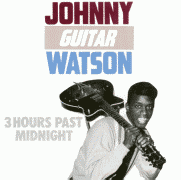

Заппа'zУх!Ой!
русский более или менее регулярный бюллетень для поклонников американского композитора
Frank'а Vincent'а Zappa'ы
Выпуск.13 (15 ноября 1998)
Любимый блюзмен
Ну, какие радости могут быть у старшеклассника в пустыне под крылышком военно-воздушной базы Эндрюс?
| FZ: I hadn't been raised in an environment where there was a lot of music in the house. This couple that owned the chili place, Opal and Chester, agreed to ask the man who serviced the jukebox to put in some of the song titles that I liked, because I promised that I would dutifully keep pumping quarters into this thing so I could listen to them. So I had the ability to eat good chili and listen to Three Hours Past Midnight by Johnny Guitar Watson, for most of my junior and senior years. | ФЗ: Дом, в котором я вырос, не был особенно музыкальным. А эта пара: Опал и Честер, что держали мексиканскую закусочную, согласились договориться с человеком, обслуживавшим их джюк-бокс, чтобы он зарядил его кое-какими из тех пластиночек, что мне нравились, а уж я пообещал в этом случае регулярно вгонять в него четвертаки и слушать свои песенки. Вот так мне удалось есть отличные перцы и слушать "Three Hours Past Midnight" Johnny Guitar Watson'а большую часть моих школьных лет. |
|
BBC2 "Late Show" (March 11, 1993). |
Би-Би-Си2 "Поздно вечером", (11 Марта 1993) |
Джонни Гитара Уотсон. Три часа после полуночи.
Well, here is three hours past midnight
And my baby's nowhere around
Well, here is three hours past midnight
And my baby's nowhere around
Well I listen so hard to hear her footsteps
And ain't even hear a sound
Да, один из тех замечательных боевых блюзовых дедков, существование которых замечать отказывается Мистер Paul Oliver, что, впрочем не мешает им самим себя считать (и не без основания:-)) родоначальниками всего на свете.
| "I was doing things like Hendrix, 15 years before, playing guitar with my teeth, hanging from rafters and doing double gigs with Guitar Slim ... We used to work together in clubs with 30 foot guitar leads, sit on each othres shoulders and walk out into the audience" | "Я делал то же, что и Хендрикс за пятнадцать лет до него, играл на гитаре зубами, свисая с потолка и устраивая концертные дуэли с Guitar Slim'ом ... Нам случалось играть вместе в клубах, мы использовали семиметровые гитарные шнуры, сидели друг у друга на плечах и ходили прямо по залу." |
| ДГУ, 1987 | JGW, 1987 |
Нo, конечно, носатого подростка, любителя Вареза и Стравинского из мохавской глухомани восхищали не эскапады в тарзанском стиле и музыкальная стоматология, а то, что "taking up the space between the bridge and the third verse" - гитарные соло. Позднее ФВЗ говорил, что именно сорок восемь секунд "Three Hours Past Midnight" Watson'а (1:45-2:33) и тридцать четыре (1:46-2:20) "Story Of My Life" Eddie 'Guitar Slim' Jones'а и сформировали его представления о том, чем должен заниматься гитарист, оставленный один на один с инструментом.
| "To be 'beyond the notes'" | "Быть 'вне нот'" |
| TRFZB p.179 | НКОФЗ p.179 |
Но если родоначальник гитарных улетов FZ номер один Eddie - 'Guitar Slim' Jones скончался от пневмонии на фоне загульного истощения еще в 1959, то Johnny 'Guitar' Watson не только пережил своего великого ученика (умер JGW 17 мая 1996, открывая свое собственное выступление на сцене 'Blues Cafe' в Иокогаме), но и смог испытать все радости признательности и уважения младшего к старшему.
Впервые Фрэнк пригласил своего любимого блюзмэна (тогда, кстати, промышлявшего легеньким funk'ом) на совместную запись в 1975. Как специальный гость, JGW добавил ехидства своим вокалом дядьки-блюз-вам-всем-за-пазуху песенке San Ber'dino альбома One Size Fits All
Just 60 miles, 60 miles
Down in San Ber'dino freeway
They got some dark green air
An' you can choke all day
Девять лет спустя, в восемьдесят четвертом, Watson'у была любезно предоставлена возможность всеми возможными афро-американскими способами обложить лягушатников в песенке In France альбома Фрэнка Заппы Them or Us, другой затеей года был мюзикл Thing-Fish, JGW и здесь генеральское место под почетной грамотой - роль Brown Moses'а
Dey callin' me BROWN MOSES
Fo' dat id sho'ly what I am,
Ancient an' re-lij-er-mus
Solemn an' pres-tig-i-mus
В 1985 Фрэнк Заппа зазвал старого коня, который дорожки не испортит, не только записать очередную песенку I Don't Even Care для нового альбома Meets the Mothers of Prevention, но позволил даже на равных поучаствовать в творческом процессе. JGW - автор слов, лирики, так сказать, какая уж ни есть.
Would you b'lieve it?
Uh-huh
Don't even care
Uh-huh
Любопытно при этом, правда, что по гитарке-то, которую Уотсон умел и есть, и пить, любящий Фрэнк ему так ни разу и не дал пройтись? Деликатность? Любовь не предполагает перетягивания каната?
А, может быть, просто еще не время раскрывать все карты? Во всяком случае в документальном биографическом фильме, цитатой из которого мы начали сегодняшние заметки, BBC2 "Late Show", снятом за несколько месяцев до ухода маэстро из жизни, есть рассказ о Салоне,
| Narrator: Despite his illness, despite no longer performing live, Zappa has lost none of his relish for experimentation. He recently held what he called a Salon at his house, where he recorded the combined sound made by the Chieftains from Ireland, a Tuvan throat singing group from Mongolia, and his old friend Johnny Guitar Watson. | Ведущий: Несмотря на болезнь, и то, что он давно уже не выступает с концертами, Заппа не потерял ни грамма своей склонности к экспериментам. Недавно он устраивал то, что сам называет Салоном, сеансы звукозаписи совместного музицирования группы Chieftains из Ирландии, Тувинских горловых певцов из Монголии [ошибка, конечно, из бывшего СССР] и старого друга Johnny Guitar Watson'а |
Из чего вывод напрашивается о том, что в подвалах дома ФВЗ на Woodrow Willson Dr. архивиста ждут самые неожиданные и удивительные находки, а нас, возможно, новые пластинки с участием как любимого нами композитора, так и любимого им блюзмена.
|
Ну, а пока же старая и добрая. Как для желающих насладиться
неподдельным
блюзовым бренчаньем из настоящих пятидесятых, так и будущих гениев,
как знать, если одного могли пробудить подобные соло, почему бы не
закинуть удочку еще разок? Пустынь, пустырей и помоек, во всяком
случае, у нас навалом. И подростки по ним шатаются!
А по сему, Johnny Guitar Watson. Three Hours Past Midnight. Ace Records. 1986. |
 |
Искренне Ваш, Владимир Советов
http://www.arf.ru/
| Домой | Заппа'zУх!Ой! | Поиск | Хозяин |